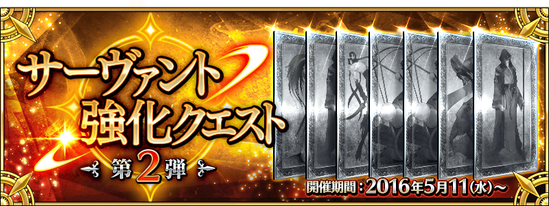
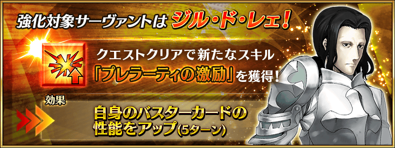
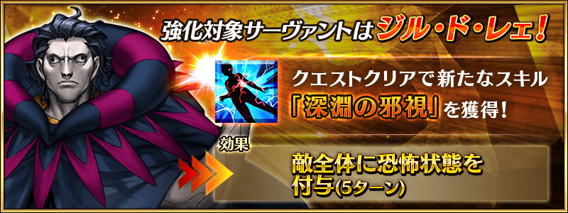
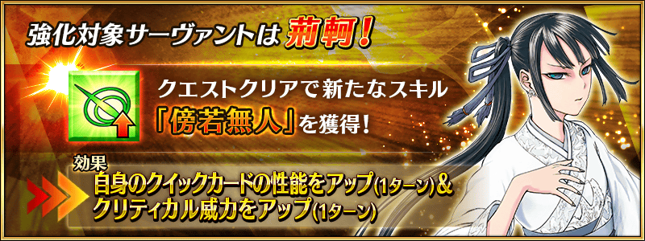
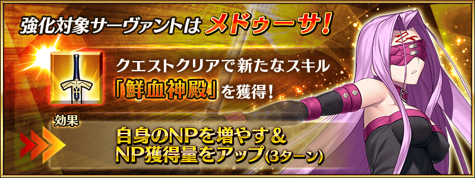
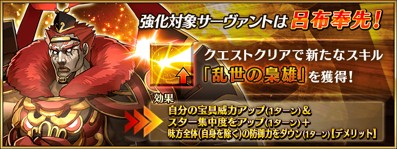
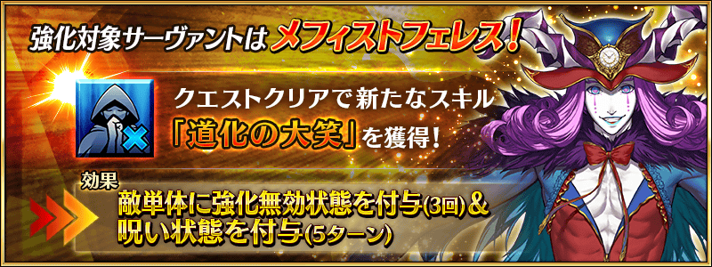

◆活動舉辦◆
2016年5月11日(三)16:00～
◆活動概要◆
能強化Servant能力的特別關卡，「Servant強化關卡」！
這次做為第2彈，合計7位為對象。
1天各1位，連續7天合計7個關卡在迦爾帝亞之門開放。
不僅進行對象Servant的強化，也能獲得聖晶石做為關卡通過報酬。
◆參加條件◆
所持有的強化對象Servant，必須使其最終再臨。
※未持有對象Servant的話，關卡不會出現。
※關卡沒有舉辦期限。







今後進行的「Servant強化關卡」，無論如何也請務必參加！